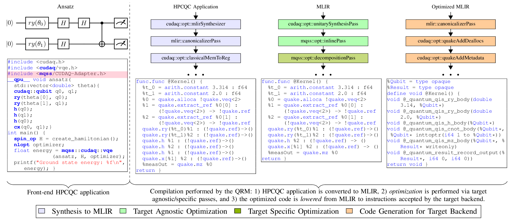
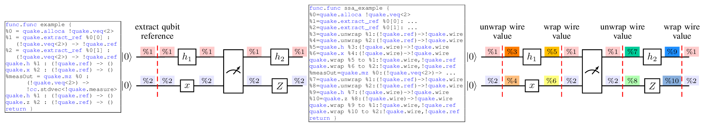
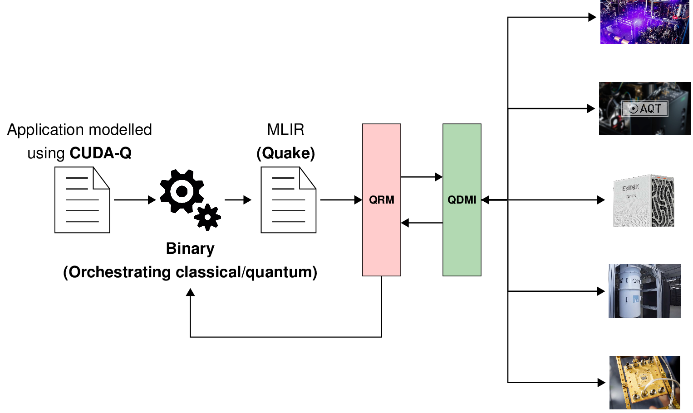

FAQ¶
What is MQSS?¶
MQSS stands for Munich Quantum Software Stack, which is a project of the Munich Quantum Valley (MQV) initiative and is jointly developed by the Leibniz Supercomputing Centre (LRZ) and the Chairs for Design Automation (CDA) and for Computer Architecture and Parallel Systems (CAPS) at TUM. It provides a comprehensive compilation and runtime infrastructure for on-premise and remote quantum devices, supports modern compilation and optimization techniques, and enables current and future high-level abstractions for quantum programming.
This stack is designed to deploy in various scenarios via flexible configuration options, including stand-alone scenarios for individual systems, cloud access to multiple devices, and tight integration into HPC environments supporting quantum acceleration.
A concrete instance of the MQSS is deployed at the LRZ for the MQV, serving as a single access point to all of its quantum devices via multiple compatible access paths, including a web portal, command line access via web credentials as well as the option for hybrid access with tight integration with LRZ’s HPC systems. It facilitates the connection between end-users and quantum computing platforms by its integration within HPC infrastructures, such as those found at the LRZ.
What is MLIR?¶
MLIR (Multi-Level Intermediate Representation) is a versatile compiler framework for developing domain-specific compilers and optimizing transformations. MLIR originated as part of the LLVM ecosystem and is particularly tailored for modern, complex computational workflows, including machine learning, AI, and heterogeneous hardware.
MLIR supports multiple levels of abstraction within a single framework, allowing developers to work with high-level domain-specific operations down to hardware-specific operations. Users can define their dialects (custom operations and types) for specific problem domains while leveraging the shared infrastructure for optimization and code generation already provided by MLIR.

Additionally, MLIR promotes interoperability among different models of computation and supports optimization passes across various abstraction levels, including high-level and low-level operations.
For more information on MLIR.
What is an MLIR Dialect?¶
An MLIR dialect is a modular and extensible namespace within the MLIR framework that defines a set of operations, types and attributes specific to a domain, language, or model of computation. Dialects enable MLIR to be a highly flexible intermediate representation (IR).
For instance, Quake is an MLIR dialect designed for quantum computing. It serves as part of NVIDIA’s CUDAQ framework, facilitating the development, optimization, and deployment of quantum-classical hybrid programs. Quake represents quantum programs within MLIR, providing a high-level abstraction for quantum operations and allowing developers to leverage the MLIR infrastructure for optimization and compilation. Below is an example of a quantum circuit and its corresponding representation using Quake. Each instruction at MLIR level matches the gates represented in the diagram. Though, at first, this representation might resemble other representations such as QASM and QIR, there exists a difference in the flexibility of the representation that allows transformations at different levels of abstraction, which is provided by the MLIR framework.

For more information on QUAKE MLIR Dialect.
What is an MLIR pass?¶
An MLIR pass is a transformation or analysis applied to an MLIR intermediate representation (IR) to modify, optimize, or gather information. Passes are a central concept in compiler frameworks, including MLIR, enabling modular, reusable,and extensible code transformations at various abstraction levels.

For instance, in the figure above, an MLIR optimization pass is applied to the input example circuit, which contains two consecutive Hadamard gates on qubit 0. Accordingly, in the output-optimized circuit shown on the right, those two consecutive Hadamards are removed because they are equivalent to an identity operation.
MLIR has two categories of passes: transformation passes and analysis passes. The pass presented above is a transformation pass. Moreover, passes can be applied in sequences defined as pass pipelines.

In the figure shown above, three pass pipelines are defined. In purple, a synthesis to QUAKE pipeline synthesizes QUAKE MLIRcode from a given input C++ program. In green, an optimization pipeline that applies a series of transformations passes on MLIR modules. Finally, in orange, a pass pipeline that lowers QUAKE MLIR modules to the Quantum Intermediate Representation (QIR).
The compiler converts the high-level HPCQC application to MLIR and forwards the quantum circuits to the QRM. Then, the QRM represents the quantum circuits as quantum kernels using the MLIR dialect Quake (see purple blocks). Optimization involves applying a pipeline of target-agnostic and target-specific passes that transform the input quantum circuit into an optimized version (see green blocks) that is compliant with the target device. Finally, the optimized MLIR/Quake circuit is lowered to a program with instructions accepted by the selected target backend (see orange blocks). In this example, the optimized MLIR code is lowered to QIR. Note that the code presented here is not functional and is only for illustrative purposes.
Why include MLIR into the MQSS?¶
One fundamental feature of MLIR is its ability to model different levels of abstraction related to a domain-specific language. In contrast, Quantum representations such as the QIR or QASM are instruction-level representations. Performing transformations on a low-level abstraction, such as instruction-level, might not be a good choice. Instruction-level representations are a list of quantum gates that operate on qubits. The figure below shows a non-compliant and a compliant SSA MLIR/Quake quantum kernel on the left and right, respectively. The problem with using representations that do not expose the data dependencies, as shown on the left and QIR, is that the compiler might apply incorrect transformations during optimization.

The representation presented on the left assumes a value referencing each qubit. Values %1 and %2 correspond to qubits 1 and 2, respectively. By following only the value %1, the compiler might wrongly assume that h1 has produced the value %1 and is immediately consumed by h2. The compiler will try to remove gates h1 and h2 since two consecutive Hadamard gates result in an identity. However, following this assumption, the compiler could ignore the fact that a measurement exists between the two gates. Thus, representations using values referencing qubits might not be a good choice when applying transformation that relies on the data dependencies among gates. In contrast, as presented on the figure’s right, an SSA-compliant representation exposes the data dependencies without ambiguity since each gate consumes/produces values.
These values can also be visualized as the wires connecting the gates in the quantum circuit. Accordingly, there is no ambiguity in the representation, and eliminating h1 and h2 is impossible because both gates reference different values at their output and input, respectively. There, gate h1 consumes the value %3, corresponding to unwrapping the qubit reference value %1, and producing the value %5. Gate h2 consumes the value %7 corresponding to unwrapping the qubit reference value %1 after the measurement. Accordingly, there is no ambiguity in the representation, and eliminating h1 and h2 is impossible because both gates reference different values at their output and input, respectively.
Where do MLIR passes fit into the MQSS?¶
The collection of MLIR passes stored in this repository is part of the Munich Quantum Software Stack (MQSS). The passes are utilized inside the Quantum Resource Manager (QRM).

For example, a hybrid quantum application can be defined in a high-level programming language such as C++ using the CUDAQ library. Those code fragments in a hybrid quantum application defined as quantum kernels will be submitted to the QRM.
By specifying the target as MQSS at compilation time, the generated binary will orchestrate the classical and quantum resources. Every time a quantum kernel has to be executed, the compiled binary submits the MLIR code of the correspondent quantum kernel to the MQSS stack. Thus, on the MQSS side, the MLIR module is processed by the QRM, which perform agnostic passes (optimization passes) and target-specific passes (transpilation passes and lowering passes). The lowered code is sent to the Quantum device, and the results are collected and sent back to the hybrid application.
Under which license is this collection of passes released?¶
This collection of MLIR passes is released under the Apache License v2.0 with LLVM Exceptions. See LICENSE for more information. Any contribution to the project is assumed to be under the same license.